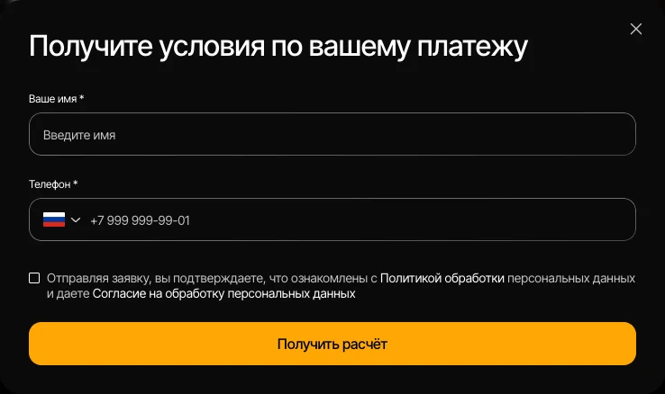
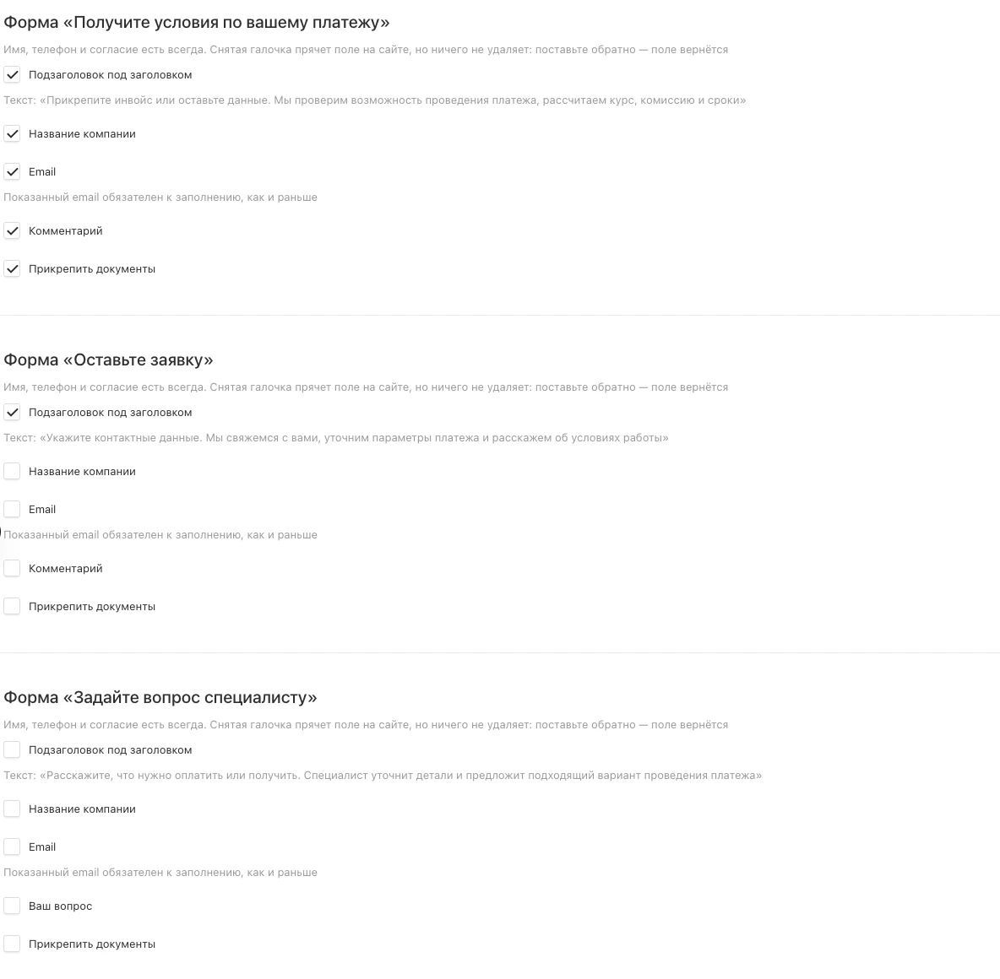
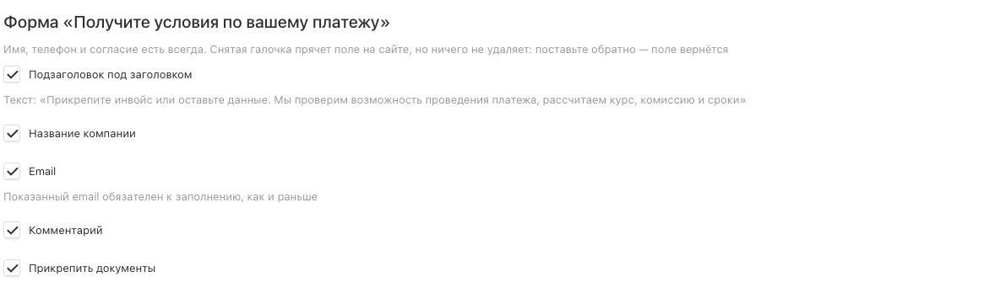

1. Как это устроено
На сайте три формы. Они выглядят одинаково, но открываются из разных мест и по-разному называются.
| Форма | Откуда открывается |
|---|---|
| Получите условия по вашему платежу | Кнопка «Получить условия» на первом экране и в блоке внизу страницы. |
| Оставьте заявку | Кнопка «Оставить заявку» в шапке сайта, в том числе в меню на телефоне. |
| Задайте вопрос специалисту | Кнопка «Задать вопрос» внизу страницы. |
У каждой формы свой набор галочек, и они не влияют друг на друга. Можно оставить короткой форму с первого экрана, а в «Задайте вопрос» вернуть поле вопроса — это нормальный случай, а не исключение.

2. Где настроить
В админке слева выберите раздел «Форма заявки». Внутри — три блока, по одному на каждую форму.

-
Поставьте или снимите галочки
Галочка стоит — поле показывается посетителю. Галочка снята — поле спрятано. Ничего при этом не удаляется: поставите обратно, и поле вернётся таким же, как было.
-
Нажмите «Сохранить»
Кнопка вверху справа. Изменения видны на сайте сразу — обновите страницу и откройте форму, чтобы проверить.

3. Что означает каждая галочка
Набор одинаковый у всех трёх форм.
| Галочка | Что показывает |
|---|---|
| Подзаголовок под заголовком | Строка-пояснение под названием формы. Её текст написан прямо под галочкой, чтобы было понятно, что именно вы включаете. Сейчас подзаголовок оставлен только у формы «Оставьте заявку»: у остальных он звал прикрепить инвойс и рассказать о платеже, то есть к полям, которых больше нет. |
| Название компании | Поле рядом с именем. Заполнять его посетителю необязательно. |
| Поле рядом с телефоном. Если оно показано, посетитель обязан его заполнить — как и было раньше. Спрятали — заявка приходит без почты, и это нормально. | |
| Комментарий | Многострочное поле внизу. В форме «Задайте вопрос специалисту» оно называется «Ваш вопрос» и обязательно к заполнению, пока показано. Спрятали — форма отправляется без него. |
| Прикрепить документы | Строка со скрепкой: посетитель прикладывает инвойс или договор. Файлы приходят вместе с заявкой. |
Имя, телефон и согласие не выключаются. Без имени и телефона заявка бесполезна — менеджеру не к кому обращаться, а согласие на обработку данных требует закон. Поэтому галочек у них нет.
4. Частые случаи
-
Хочу вернуть почту, чтобы высылать расчёты письмом
Блок нужной формы → галочка «Email» → «Сохранить». Поле встанет рядом с телефоном, и заполнить его будет обязательно.
-
Клиенты присылают инвойсы в переписке, хочу принимать их сразу
Форма «Получите условия» → галочки «Прикрепить документы» и «Комментарий». Файлы придут вместе с заявкой, их видно в карточке заявки в админке.
-
Слишком много заявок без сути, хочу понимать запрос заранее
Форма «Задайте вопрос специалисту» → галочка «Ваш вопрос». Поле станет обязательным, и заявка придёт уже с описанием задачи.
-
Передумали — хочу как было
Снимите галочки обратно и сохраните. Поля спрячутся, форма снова станет короткой. Так можно сколько угодно раз.
Частые вопросы
-
Что будет с уже полученными заявками?
Ничего. Старые заявки остаются в админке как есть, со всеми заполненными полями. Галочки меняют только то, что видит посетитель на сайте.
-
А в Bitrix24 заявка дойдёт, если в ней нет почты или компании?
Да. В сделку уезжает то, что человек заполнил; пустые поля просто не заполняются. То же самое в письме-оповещении: вместо пустого значения стоит прочерк.
-
Правка сразу видна посетителям?
Да, сразу после «Сохранить». Если форма уже открыта у вас в браузере, обновите страницу — она подтянет новые настройки.
-
Можно убрать телефон и оставить только почту?
Нет. Телефон, имя и согласие всегда на месте. Если по делу нужно иначе — напишите, обсудим: это уже доработка, а не галочка.
-
Форма стала ниже — это не сломает вёрстку?
Нет. Форма рассчитана на любой набор полей: если соседнего поля нет, оставшееся занимает всю ширину. Проверено на компьютере, планшете и телефоне.